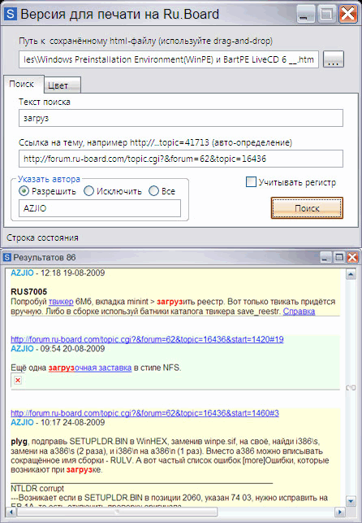

printable_version
Назначение
Версия для печати - для поиска постов конкретного пользователя с конкретным текстом. На форуме forum.ru-board.com есть js-скрипт "Найти посты", чтобы найти посты пользователя или посты с определённым текстом в постах пользователя. Отличная вещь, разве что нет подсветки, зато надёжно работает без лишних телодвижений.

Версия для печати на Ru.Board
Утилитка обрабатывает сохранённую страничку форума Ru.Board - "Версия для печати".
1. Кидаем сохранённую страничку "Версия для печати" в поле ввода
2. Вводим текст поиска
3. Жмём "Поиск"
Утилита выдаст только те сообщения, в которых найден текст, он будет подсвечен красным цветом и жирными буквами. В начале сообщения ссылка на пост, имя автора и дата. Можно сделать поиск по автору или исключить автора, указывая имена через точку с запятой.
"Все по автору" - означает получить все сообщения какого либо автора или нескольких авторов.
На вкладке "Цвет" всего лишь изменение цвета странички для удобства чтения. Создаётся новый html-файл в том же каталоге.